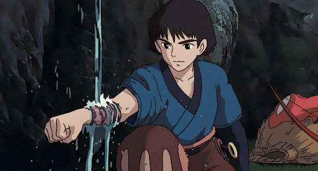
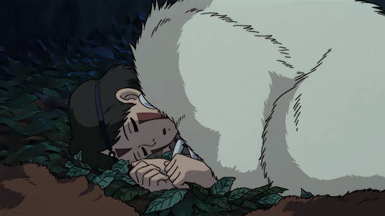

Princess Mononoke follows the journey of the last Emishi prince, Ashitaka, and his attempts to make peace between the human settlement, Irontown, and the creatures living in the forest that surrounds it.The film begins with Ashitaka saving his village from a vicious assault by killing a demon who is actually the giant boar god Nago embodied by rage. During the fight, Ashitaka receives a demon mark on his right arm, and he is cursed by the Boar God's hatred and pain. Ashitaka is told that the mark will spread throughout his body, killing him. A ball of iron is found inside Nago's corpse, which is somehow connected to the curse. Ashitaka resolves to journey to Nago's origin, the lands to the West, to try and find a cure for his curse. He cuts his hair, signifying his permanent departure from his village, and rides out with Yakul, his loyal red elk. Since it was considered taboo to see off one who is banished, only one person dared to say goodbye to Ashitaka: his 'little sister,' Kaya (according to Miyazaki, actually his bride-to-be; calling herself his 'little sister' was a term of affection), who gives him her crystal dagger so that he would not forget her. Having traveled some distance, Ashitaka arrives in a forest full of animal gods, including the wolf god Moro. Also in the forest is the Forest Spirit, described as a "god of life and death", which takes the form of a deer during the day and a large shadowy "night-walker" at night. The forest lies beside a human settlement called Irontown which continually clears the forest to get to more iron ore, causing many battles as the animals attempt to protect their diminishing forest. It was during one of these battles that Irontown's leader, Lady Eboshi, shot Nago. During the film Ashitaka travels between the forest and Irontown several times, trying to make peace. During Ashitaka's first visit, the village is attacked by San, a human girl who has been adopted by the wolves. Ashitaka intervenes to stop the two sides fighting and takes San back to the forest, but is injured in the process. With San's intervention, he is healed of his wounds — but not his curse — by the forest spirit. Under the influence of Jigo, Eboshi sets out to destroy the Forest Spirit. The head of the Forest Spirit is believed to grant immortality; Jigo plans to give the head to the emperor; in return the emperor promises to give Irontown legal protection against the envious daimyos coveting the town's prosperity. Eboshi, however, suspects (rightly) that the emperor's agents are also assigned to take control of Irontown at the most opportune moment. Despite Ashitaka's efforts, Eboshi succeeds in cutting off the Forest Spirit's head while it is transforming. Jigo collects the head while the body is transformed into a god of death, as a result the land becomes covered with a lethal black ooze, that completely destroys the forest and turns the land barren. To stop the spreading ooze from reaching the villagers, Ashitaka and San manage to take the head from Jigo and by returning the head to the Forest Spirit, the land becomes green again, and Ashitaka's curse is finally lifted. |
|  |
Ashitakaliterally tranlates to "Leap" in Japanese. Ashitaka is an Emishi prince who was meant to become leader of his tribe. While rescuing his village from Nago, the demon boar god, Ashitaka's arm is afflicted with a curse that will eventually consume and kill him. Under the effect of the curse, Ashitaka gains superhuman strength, but causes him to grow weaker as time passes. Ashitaka is exiled by his village and sent westward to find the cause of the demon's corruption as well as a cure for his curse.After arriving at Irontown, Ashitaka is caught up in the town's war against the mountain gods. Amidst the battle at Irontown, Ashitaka meets San and soon becomes enamored with her. Ashitaka takes San back to Moro and attempts to negotiate a ceasefire between the warring sides. He is unsuccessful. Throughout the film, Ashitaka develops deep feelings for San and eventually falls in love with her. It is stated by Moro that he wanted to share his life with her. At the end of the film, Ashitaka's curse is eventually removed and, though San and Ashitaka have grown close, they go their separate ways: to the forest and to Irontown respectively. However, Ashitaka promises to visit San in the forest whenever he can. |
|  |
Santranslates to "Three" in Japanese. When she was a baby, the wolf goddess Moro attacked her parents, who were found damaging the forest. San's parents threw her to Moro as a sacrifice to save their own lives. Moro raised San as her own daughter, and in turn, San treats Moro as her mother and Moro's two natural pups as brothers.San's primary concern is protecting the forest and the animals she lives with. San rejects her own humanity and even thinks of herself as a wolf. She has attempted to assassinate Eboshi of Irontown many times, as San believes that Eboshi's death will result in the end of Irontown and human growth into the surrounding forest. It is only by Ashitaka's affection to her that she slowly comes to acknowledge her human side as well. After the battle for the Forest Spirit's head, San tells Ashitaka that he is very dear to her, but since she cannot forgive the human race for what they have done to the forest, she will continue to live apart from the humans. San returns to the forest and Ashitaka remains in Irontown. |